| Flexible Statistics Data Analysis Toolbox™ | |
Automatic Outlier Detection Procedure based on Forward Search Estimator
[out] = FSM(Y)
[out] =
FSM(Y,param1,val1,param2,val2,...)
FSM(Y) gives in structure out a set of units which can be considered atypical. To detect outliers all methods compare selected distances with a threshold. We examine the minimum Mahalanobis Distance among observations that are not in the subset (say of size m).
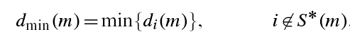
If this ordered observation is an outlier relative to the other m observations, this distance will be "large" compared with the maximum distance of observations in the subset. In uncalibrated use of the minimum Mahalanobis Distance to detect outliers the decision whether a difference in distances is "large" is subjective, without reference to any null distribution. To calibrate the forward search and so to provide an objective basis for decisions about the number of outliers in a sample we have found the distribution of the minimum Mahalanobis distance in the forward search. The output is a series of theoretical simultaneous confidence bands (envelopes) associated to the quantiles of the distribution of the Mahalanobis Distance. Finally we have tried to calibrate the complete search in order to provide an outlier test of ascertainable properties.
To use the envelopes in the forward search for outlier detection we accordingly propose a two-stage process. In the first stage we run a search on the data, monitoring the bounds for all n observations until we obtain a "signal" indicating that observation m† therefore succeeding observations, may be outliers, because the value of the statistic lies beyond our threshold. In the second part we superimpose envelopes for values of n from this point until the first time that we introduce an observation we recognize as an outlier. The envelopes of minimum Mahalanobis Distance outside subset consist roughly of two parts; a flat "central" part and a steeply curving "final" part. Our procedure FSM for the detection of a signal takes account of these two parts.
Because we potentially make many comparisons, one for each value of m, the form of our threshold needs to allow for simultaneity, so that we have a test with size α for the presence of at least one outlier. In order to keep into account simultaneity we envisage four conditions, the fulfillment of any one of which leads to the detection of a signal.
In the central part of the search we require 3 consecutive values of (m,n)
above the 99.99% envelope or 1 above 99.999%;
In the final part of the search we need two consecutive values of
dmin(m,n) above 99.9% and 1 above 99%;
dmin(n-2,n)>99.9% envelope;
dmin(n-1,n)>99% envelope. In this last case a single
outlier is detected and the procedure terminates.
The final part of the search is defined as: m >= n-[ 13,(n/200)0.5],
Once a signal has been found we start superimposing 99% envelopes taking n*=m†-1, m†, m†+1, ... until the final, penultimate or antepenultimate value are above the 99% threshold or, alternatively, we have a value of dmin(m,n*) for any m>m† which is greater than the 99.9% threshold.
Y is a matrix of size n-by-v containing (in the columns) the variables of the dataset
[out] = FSM(Y) returns the following information
outliers − k-by-1 vector containing the list of the units declared as outliers or NaN if the sample is considered homogeneous
mmd − n-init-by-2 matrix.
1st col = fwd search index
2nd col = value of minimum Mahalanobis distance in each step of the fwd
search
Un − (n-init)-by-11 matrix which contains the
unit(s) included in the subset at each step of the fwd search.
REMARK: in every step the new subset is compared with the old subset.
Un contains the unit(s) present in the new subset but not in the old
one.
Un(1,2) for example contains the unit included in step init+1.
Un(end,2) contains the units included in the final step of the
search.
nout − 2 x 5 matrix containing the number of times
observed minimum Mahalanobis Distance went out of particular
quantiles.
First row contains quantiles 1%, 99%, 99.9%, 99.99% and 99.999%.
Second row contains the counts of the exceedances
[out] = FSM(Y, param1,val1,param2,val2,...) specifies one or more of the name/value pairs described in the following table.
| Parameter | Value |
|---|---|
| 'plots' | missing value scalar or structure specifying
whether it is necessary to produce the plots of minimum Mahalanobis
distance |
| 'm0' | Scalar which specifies the initial subset size. The default is to start the search with v+1 units. |
| 'crit' | String which specified the criterion to be used
to initialize the search. If crit='md' the units which form initial
subset are those which have the smallest m0 pseudo Mahalanobis
distances computed using procedure unibiv (bivariate robust ellipses).
If crit='biv' sorting is done first in terms of times units fell
outside robust bivariate ellipses and then in terms of pseudoMD. In
other words, the units forming initial subset are chosen first among
the set of those which never fell outside robust bivariate ellipses
then among those which fell only once outside bivariate ellipses ... up
to reach m0. If crit='uni' sorting is done first in terms of times
units fell outside univariate boxplots and then in terms of pseudoMD.
In other words, the units forming initial subset are chosen first among
the set of those which never fell outside univariate boxplots then
among those which fell only once outside univariate boxplots... up to
reach m0. |
| 'rf' | Confidence level for bivariate ellipses (default is 0.95). This option is useful only if crit='biv'. |
| 'init' | Scalar which specifies the initial subset size to start monitoring exceedances. If init is not specified, it will be set equal to floor(n*0.6). |
| 'ylim' | Vector with two elements controlling minimum and maximum on the y axis. Default value is '' (automatic scale) |
| 'xlim' | Vector with two elements controlling minimum and maximum on the x axis. Default value is '' (automatic scale) |
| 'msg' | Scalar which controls whether to display or not messages on the screen. If msg=1 (default) some messages, such as the steps in which signal took place, are displayed on the screen, else no message is displayed. |
| 'bonflev' | option to be used if the distribution of the
data is strongly non normal and, thus, the general signal detection
rule based on consecutive exceedances cannot be used. In this case
bonflev can be: |
state=100;
randn('state', state);
n=200;
Y=randn(n,3);
Ycont=Y;
Ycont(1:5,:)=Ycont(1:5,:)+3;
[out]=FSM(Ycont);
The envelopes based on all the observations show that in the final part of the search minimum Mahalanobis Distamce curve exits from the envelopes.
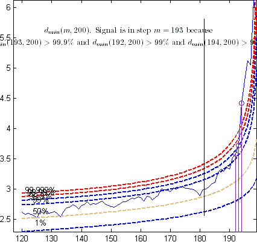
Once a signal takes place the envelopes are resuperimposed until a stopping rule is fulfilled./p>
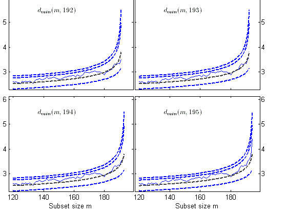
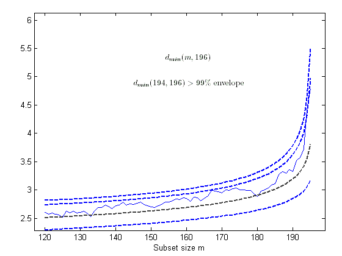The procedure of resuperimposing envelopes in this case stops when n = 85, the first time in which we have a value of dmin(m) for n>=m†-1 greater than the 99% threshold. The group can therefore be considered as homogeneous up to when we include 84 units.
The below shows the final classification obtained by the forward search. The units identified as outliers are shown in red circles.
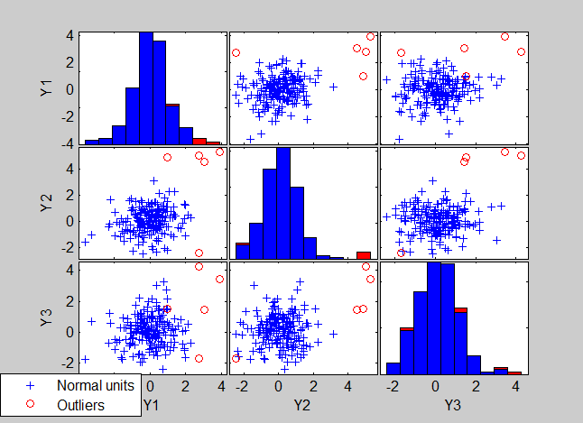
Figure below shows that among the 5 units declared as outliers 4 belong to the 5 units which had been previously contaminated.
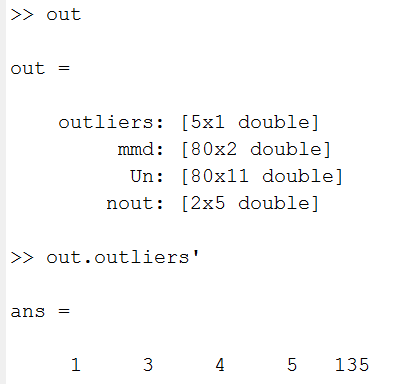
If in the previous code we change the seed to 543 (state=543) we obtain the following results:
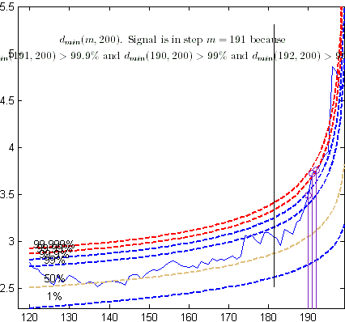
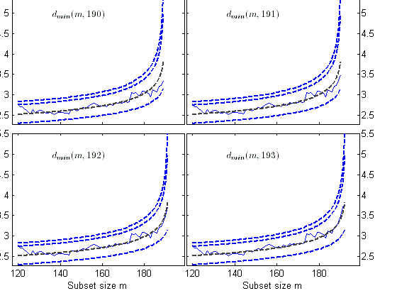
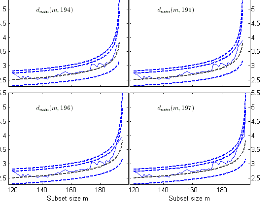
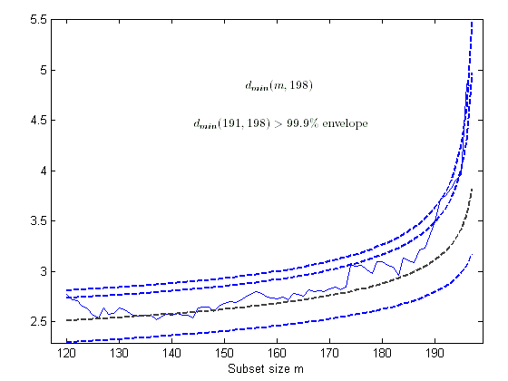
In this second example 3 of the 5 units previously contaminated are declared as outliers.
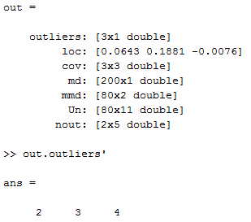
In this example we show the monitoring of the Minimum Mahalanobis Distance for the last 100 observations in the Swiss banknotes dataset:
load('swiss_banknotes');
[out]=FSM(swiss_banknotes.data(101:200,:),'plots',1);
The plot of the Minimum Mahalanobis Distance shows that there is a large peak at m=85. The peak occurs because the outliers form a loose cluster. Note that the plot goes outside the upper envelope when m is slightly less than 85. This is because, if we have a sample of 85 observations from the normal distribution, the last few distances will be relatively large and the envelope will curve upwards as it does in the plots for m a little less than 100. In fact the superimposition of envelopes from n=83 shows that there is no evidence of any outliers when n=83, n=84 and n=85, but when n=86 we obtain clear evidence of a single outlier with observation 86 well outside the 99% envelope.
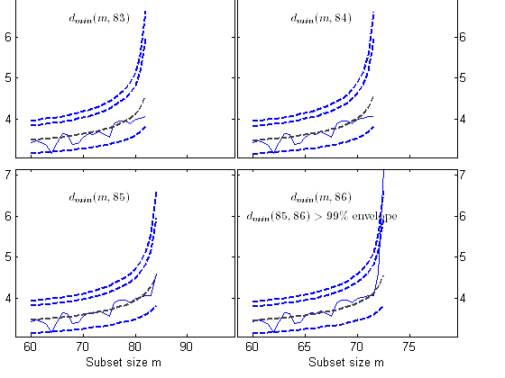
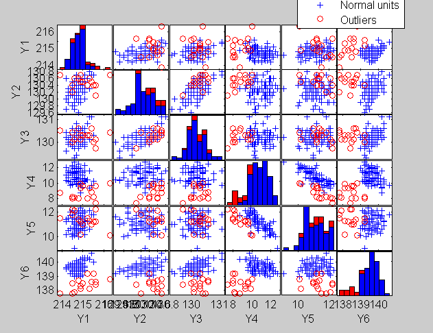
In this example we show the FS, applied to a simulated dataset with 5 contaminated variables, starting from a subset composed with the 5 observations with the smallest Mahalanobis Distance.
n=100; v=3; Y=randn(n,v); % Contaminated data Ycont=Y; Ycont(1:5,:)=Ycont(1:5,:)+3; [out]=FSM(Ycont,'m0',5,'crit','md');
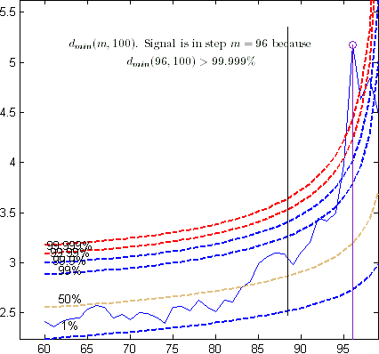
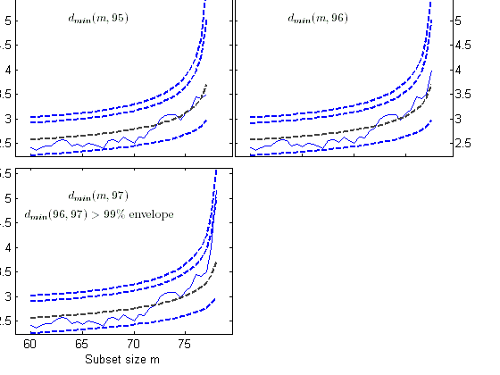 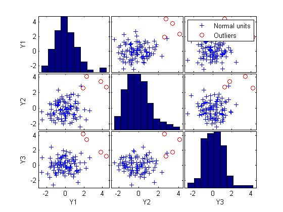| |
fscolors.html | fsmbbm.html | |